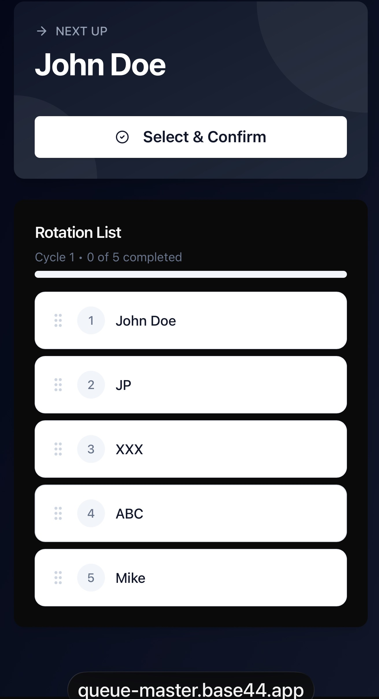
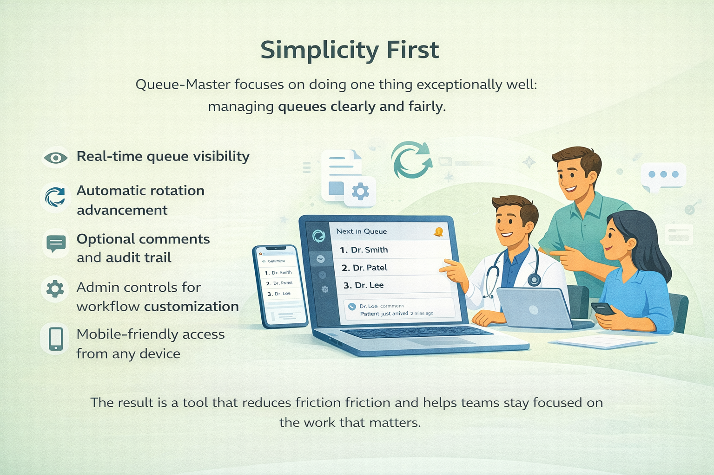

The old way creates friction.
Informal systems become unreliable as volume increases and workflows get more complex.
Queue-Master gives your team one clear view of who is next. No paper lists, no calling around, and no confusion when work gets busy.

When teams rely on paper lists, whiteboards, or phone calls, small inefficiencies turn into delays, duplicate assignments, and frustrated staff.
Informal systems become unreliable as volume increases and workflows get more complex.

Everyone sees the queue, assignments move forward automatically, and the team stays aligned.
Queue-Master is intentionally simple so it can adapt to many team-based rotation systems without adding extra complexity.
Admission rotations, consultation services, procedure scheduling, and other operational workflows.
Escalation queues, service rotations, support assignments, and time-sensitive task distribution.
Duty rotations, shared responsibilities, workflow sequencing, and fair distribution across staff.
Clean, visible, and easy to use. Open the queue, confirm the next assignment, and keep the whole team in sync.
Use this section to show how Queue-Master removes the need to manually track who is next.

The interface highlights the next person up and makes the full rotation easy to review at a glance.
Queue-Master helps teams spend less time coordinating and more time getting the right work done.